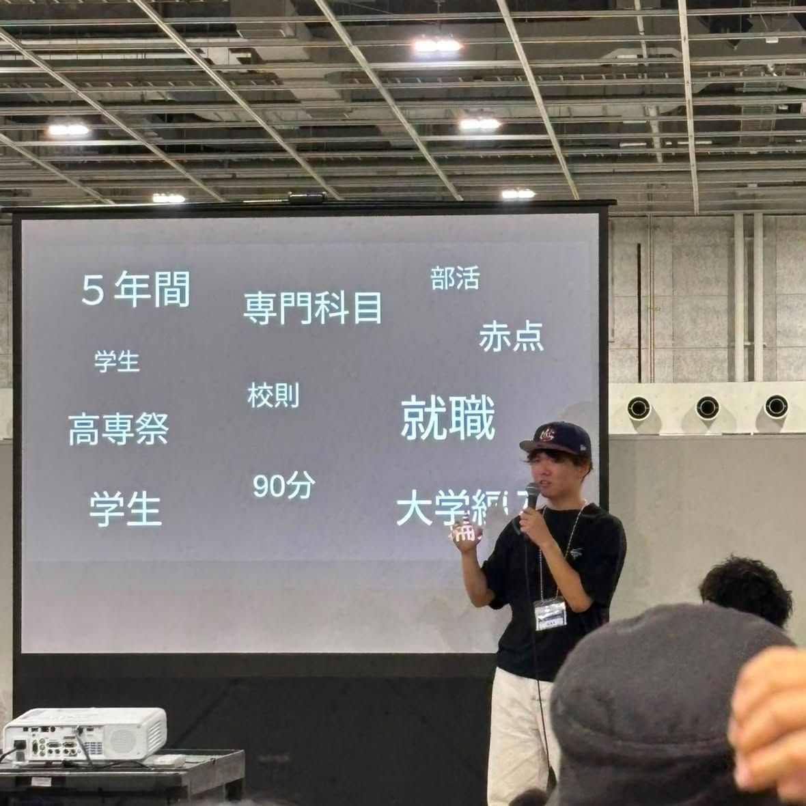
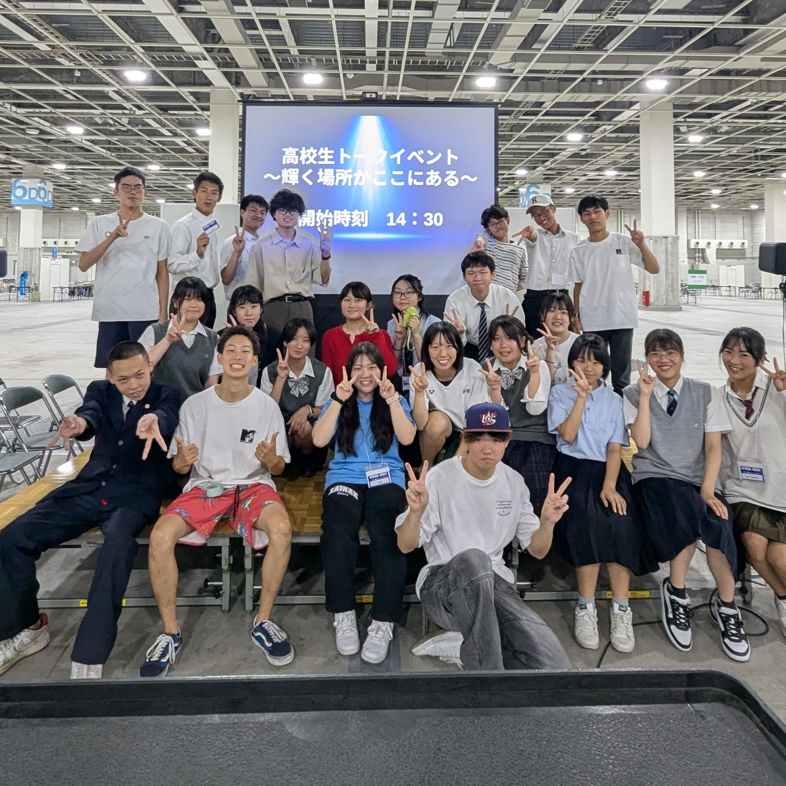

活動・登壇・学習・制作などの記録を掲載しています。
2026/10/23 FRI
全国高等専門学校ディープラーニングコンテスト（DCON 2027）で、「戎」というチームを結成して一次審査を通過しました。
本プロジェクトでは、AIによる森林の状態把握と自律的な管理支援を目指しています。私は主にAI推論システム、GoによるバックエンドAPI、データベース、クラウド基盤の開発を担当しています。
2026/7/26 SUN


本日、インテックス大阪で開催された「大阪府公立高校進学フェア2027」の高校生トークセッションにて、大阪公立大高専の学生代表として登壇しました。
ステージでは、中学生や保護者に向けて、高校と高専の違い、実際の学校生活、専門的な勉強の魅力について自身の経験を交えて発表しました。
後日、大阪府教育庁から感謝状をいただきました。